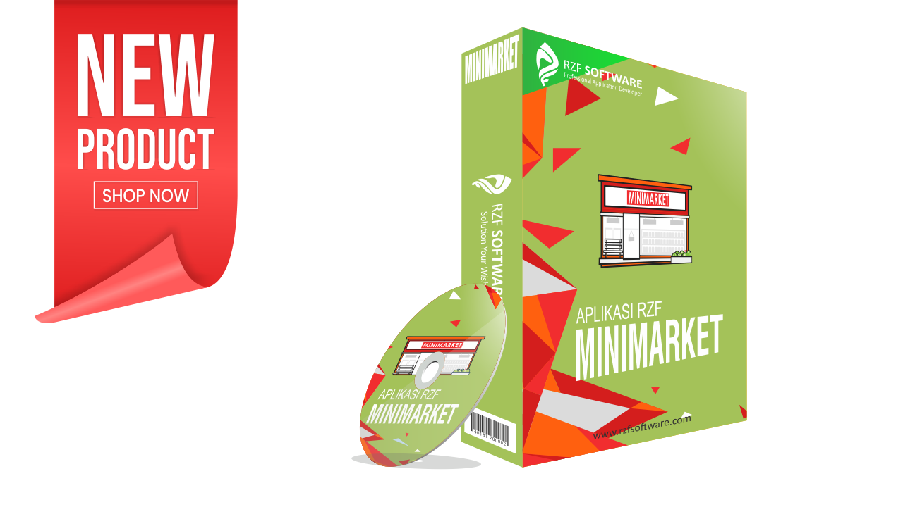

Rzf Minimarket
Software aplikasi yang didesain untuk minimarket, sistem yang dapat Anda gunakan untuk memudahkan proses transaksi dengan konsumen dan mengontrol jalannya bisnis minimarket lebih maksimal. Aplikasi Minimarket ini, dibuat untuk jenis usaha yang saat ini memiliki potensi besar sampai masa depan pilihan yang tepat untuk Anda yang sedang menjalankan atau merintis bisnis minimarket. Pada umumnya software ini dirancang untuk mempermudah proses penjualan dan pembelian barang, sehingga setiap transaksi jual beli dapat terlaksana lebih cepat dan efisien. Aplikasi minimarket yang terintegrasi akan mengelola inventaris Anda, mengelola manajemen promosi hingga memudahkan stok barang, juga dapat mempermudah dalam memonitoring kehadiran pegawai...
SelengkapnyaRzf Retail

Software aplikasi yang didesain khusus untuk toko dengan penjualan langsung pada konsumen atau eceran. Aplikasi ini dirancang untuk memudahkan dalam pengelolaan toko, minimarket, atau usaha sejenis lainnya terutama dalam mengelola stok barang ataupun dalam penjualan barang. Dilengkapi dengan berbagai menu atau fitur yang sangat sering dibutuhkan untuk usaha minimarket atau toko Anda. RZF Toko Retail ini, dibuat untuk aplikasi pertokoan retail seperti toko sembako, kelontongan, meubel, komputer, elektronik, minimarket, dan toko lainnya yang dilengkapi dengan laporan keuangan beserta dengan grafik. Hasil karya ini sudah melewati beberapa riset dan pengujian agar bisa digunakan semudah mungkin, disesuaikan dengan kebutuhan pengguna di lapangan agar dapat bermanfaat sebaik-baiknya.
SelengkapnyaRzf Toko Grosir

Software aplikasi yang didesain khusus untuk toko dengan penjualan lebih dari satu jenis pelanggan. Seperti penjualan eceran, penjualan partai atau sales, maupun penjualan cabang atau agen, di mana di dalamnya memiliki tiga harga yang berbeda dalam satu aplikasi. Dilengkapi dengan berbagai menu atau fitur yang sangat sering dibutuhkan untuk usaha minimarket atau toko grosir Anda. RZF Toko Grosir ini, dibuat untuk aplikasi pertokoan grosir seperti toko sembako, kelontongan, meubel, komputer, elektronik, minimarket, dan toko grosir lainnya yang dilengkapi dengan laporan keuangan beserta dengan grafik. Aplikasi ini tidak hanya multi harga, namun juga multi satuan, atau istilahnya harga dan satuan bertingkat. Seperti contoh pembelian suatu produk dengan satuan dus yang di dalamnya terdapat botolan, maka aplikasi mampu menjual baik dengan dus maupun botol. Hebatnya sistem akan menghitung secara otomatis dengan cepat dan tepat. Program aplikasi ini biasanya banyak digunakan oleh para agen atau distributor.
SelengkapnyaRzf Apotek Grosir

Software aplikasi yang didesain khusus untuk apotek atau toko alkes dengan penjualan lebih dari satu jenis pelanggan. Seperti penjualan eceran, penjualan partai atau sales, maupun penjualan cabang atau agen, di mana di dalamnya memiliki tiga harga yang berbeda dalam satu aplikasi. Dilengkapi dengan berbagai menu atau fitur yang sangat sering dibutuhkan untuk usaha toko alkes grosir atau apotek grosir Anda. RZF Apotek Grosir ini, dibuat untuk aplikasi toko grosir alat kesehatan atau apotek grosir lainnya yang dilengkapi dengan laporan keuangan beserta dengan grafik. Aplikasi ini tidak hanya multi harga, namun juga multi satuan, atau istilahnya harga dan satuan bertingkat. Seperti contoh pembelian suatu produk dengan satuan dus yang didalamnya terdapat botolan, maka aplikasi mampu menjual baik dengan dus maupun botol. Hebatnya sistem akan menghitung secara otomatis dengan cepat dan tepat. Program aplikasi ini biasanya banyak digunakan oleh para agen atau distributor.
Selengkapnya